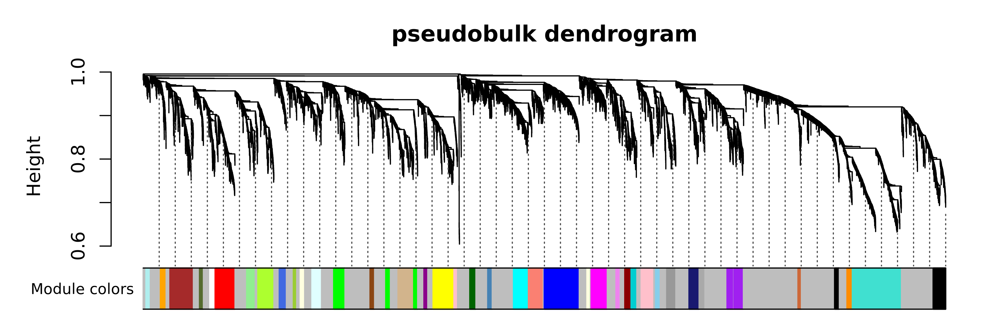
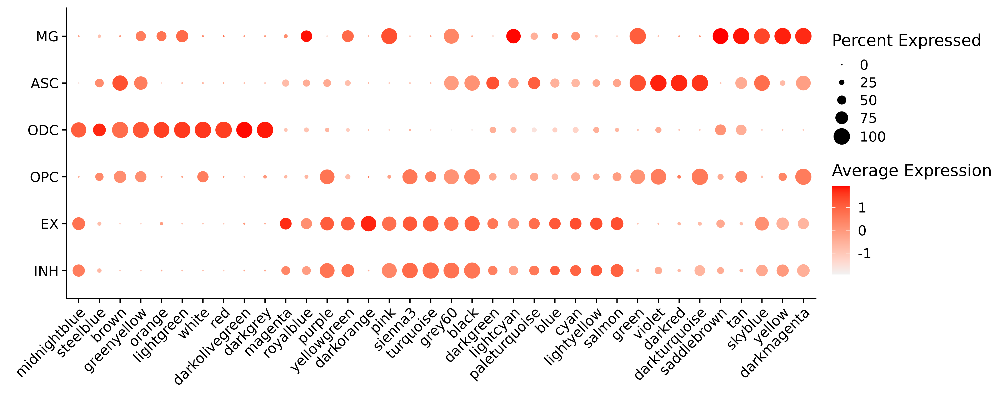
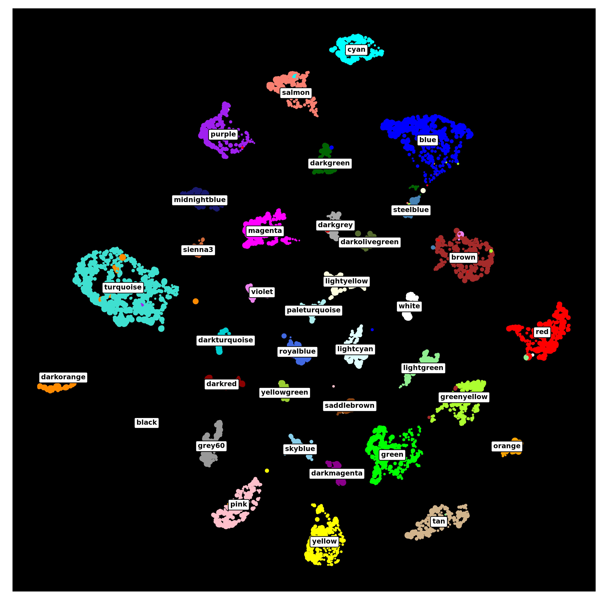
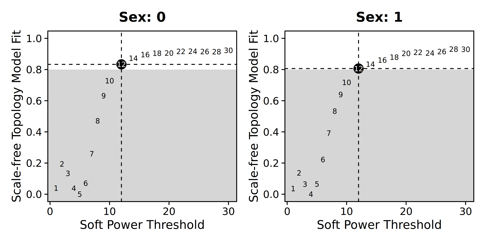
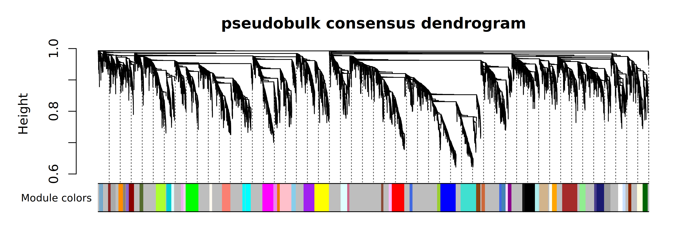
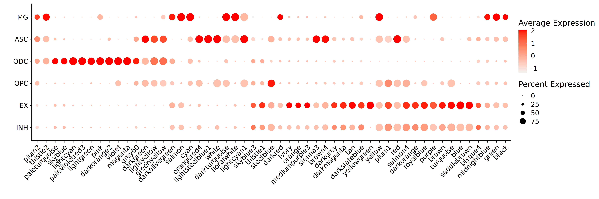

Compiled: 27-02-2024
Source: vignettes/pseudobulk.Rmd
In this tutorial, we demonstrate how to run hdWGCNA using pseudobulk data instead of using metacells or metaspots. Pseudobulk can be advantageous for very large datasets where the metacell calculations can be slow. First we discuss why we would use pseudobulk instead of metacells / metaspots, and what considerations must be made. We will then perform a co-expression network analysis in the Zhou et al 2020 human brain dataset using six major cell types together. This tutorial assumes that you are already familiar with hdWGCNA from our other tutorials.
Considerations and motivation for pseudobulk hdWGCNA
“Pseudobulk” refers to aggregating gene expression profiles from all of the cells of a particular group (cluster, cell type, etc) from a single biological replicate. This is somewhat comparable to sorting a cell population of interest (ie via FACS) and then performing bulk RNA-seq, thus the name “pseudobulk”. However, it is worth noting that pseudobulk aggregates from single-cell data are still somewhat different than actual bulk RNA-seq data. This pseudobulk procedure helps alleviate the sparsity of single-cell data in a similar way to our previous aggregation approaches. We used this pseduobulking approach in our recent spatial transcriptomic study of Alzheimer’s Disease.
Due to the cost of performing single-cell or spatial RNA-seq experiments, the number of biological replicates tends to be low for many studies. While we have not thoroughly tested the number of replicates that are required for pseudobulk hdWGCNA, the original WGCNA FAQ page recommends at least 20 samples. Without a sufficient number of samples, gene-gene correlations will essentially be too noisy to be meaningful or reproducible.
In our example dataset, we only have N=11 samples. Therefore, when we compute pseudobulk replicates for each sample across the 6 major cell types, we end up with 66 replicates. Based on the advice from the original WGCNA authors, we do not have enough replicates in this case to perform pseudobulk hdWGCNA on an individual cell type. Therefore for the purpose of this tutorial we will construct a network using pseudobulk data from all 6 cell types together.
Load the dataset and required libraries
First we need to load the required libraries into R.
# single-cell analysis package
library(Seurat)
# plotting and data science packages
library(tidyverse)
library(cowplot)
library(patchwork)
# co-expression network analysis packages:
library(WGCNA)
library(hdWGCNA)
# using the cowplot theme for ggplot
theme_set(theme_cowplot())
# set random seed for reproducibility
set.seed(12345)
# optionally enable multithreading
enableWGCNAThreads(nThreads = 8)
# load the Zhou et al snRNA-seq dataset
seurat_obj <- readRDS('Zhou_2020.rds')Create the pseudobulk data matrix
Here we make the pseudobulk data matrix using the hdWGCNA function ConstructPseudobulk. This function adds up the UMI counts for all cells in a given group based on group.by in each biological replicate based on replicate_col, which should be metadata columns in seurat_obj@meta.data. We will then compute a log CPM normalization of this matrix, but other normalization methods can be used instead if desired. Finally we allow hdWGCNA to use this matrix for downstream processing by passing the matrix directly to the SetDatExpr function. After setting up the pseudobulk matrix, we can continue to use the other hdWGCNA functions as we normally would.
Since we recommend having at least 20 replicates for this analysis, ConstructPseudobulk has a parameter called min_reps to control the minimum number of allowed replicates. Here we will set min_reps=10 so it does not give us an error message.
seurat_obj <- SetupForWGCNA(
seurat_obj,
gene_select = "fraction",
fraction = 0.05,
wgcna_name = "pseudobulk"
)
length(GetWGCNAGenes(seurat_obj))
# Construt the pseudobulk expression profiles
datExpr <- ConstructPseudobulk(
seurat_obj,
group.by = 'cell_type',
replicate_col = 'Sample',
assay = 'RNA',
slot = 'counts', # this should always be counts!
min_reps = 10
)
# compute log2CPM normalization
# You can substitute this with another normalization of your choosing.
cpm <- t(apply(datExpr, 1, function(x){
y <- (x) / sum(x) * 1000000
log2(y + 1)
}))
seurat_obj <- SetDatExpr(
seurat_obj,
mat = cpm
)Note that ConstructPseudobulk gives us an important warning about the number of replicates.
Warning message:
In ConstructPseudobulk(seurat_obj, group.by = "cell_type", replicate_col = "Sample", :
We strongly recommend at least 20 replicates for pseudobulk hdWGCNA, and there are only 11 replicates detected. Results may not be reproducible or informative with low numbers of replicates so proceed at your own risk.While there are only 11 samples in this dataset, in this case, our total number of “replicates” for network analysis is actually higher since we are performing network analysis for all 6 cell types together, therefore giving us 66 pseudobulk “replicates”.
Since we often want to perform hdWGCNA on one cell type at a time, we can easily subset the pseudobulk matrix to just contain one cell type for downstream analysis. Note that this is an example and was not run for this tutorial.
# we only want the data from the astrocytes
cur_group <- 'ASC'
# subset the matrix for just this cell type
cur_cpm <- cpm[grepl(cur_group, rownames(cpm)),]
seurat_obj <- SetDatExpr(
seurat_obj,
mat = cur_cpm
)Co-expression network analysis
Now that we have our pseudobulk matrix, we can perform co-expression network analysis.
# select the soft power threshold
seurat_obj <- TestSoftPowers(seurat_obj)
# construct the co-expression network and identify gene modules
seurat_obj <- ConstructNetwork(
seurat_obj,
tom_name='pseudobulk',
overwrite_tom=TRUE,
mergeCutHeight=0.15
)
PlotDendrogram(seurat_obj, main='pseudobulk dendrogram')
We can see that this analysis has resulted in 36 co-expression modules across the six cell types.
Next we compute the module eigengenes (MEs) and eigengene-based connectivity (kMEs) at the single-cell level, and we can plot the MEs for each module in the different cell types.
# compute the MEs and kMEs
seurat_obj <- ModuleEigengenes(seurat_obj)
seurat_obj <- ModuleConnectivity(seurat_obj)
# get MEs from seurat object
MEs <- GetMEs(seurat_obj)
mods <- colnames(MEs); mods <- mods[mods != 'grey']
# add MEs to Seurat meta-data for plotting:
meta <- seurat_obj@meta.data
seurat_obj@meta.data <- cbind(meta, MEs)
# plot with Seurat's DotPlot function
p <- DotPlot(seurat_obj, features=mods, group.by = 'cell_type')
# reset the metadata
seurat_obj@meta.data <- meta
# flip the x/y axes, rotate the axis labels, and change color scheme:
p <- p +
RotatedAxis() +
scale_color_gradient(high='red', low='grey95') +
xlab('') + ylab('')
p 
Next we will use UMAP to project the co-expression network in two dimensions, and we will visualize the results using ggplot2.
# compute the co-expression network umap
seurat_obj <- RunModuleUMAP(
seurat_obj,
n_hubs = 5,
n_neighbors=10,
min_dist=0.4,
spread=3,
supervised=TRUE,
target_weight=0.3
)
# get the hub gene UMAP table from the seurat object
umap_df <- GetModuleUMAP(seurat_obj)
# plot with ggplot
p <- ggplot(umap_df, aes(x=UMAP1, y=UMAP2)) +
geom_point(
color=umap_df$color,
size=umap_df$kME*2
) +
umap_theme()
# add the module names to the plot by taking the mean coordinates
centroid_df <- umap_df %>%
dplyr::group_by(module) %>%
dplyr::summarise(UMAP1 = mean(UMAP1), UMAP2 = mean(UMAP2))
p <- p + geom_label(
data = centroid_df,
label=as.character(centroid_df$module),
fontface='bold', size=2) +
theme(panel.background = element_rect(fill='black'))
p
As you can see, the co-expression network derived from pseudobulk data can be used for the same downstream analysis as with the metacell/metaspot data.
Consensus network analysis with pseudobulk data
We can also run consensus network analysis using pseudobulk data. If you are not already familiar
with consensus co-expression network analysis, please visit our other tutorial page describing it in more detail. Here we will use all cell types again, and we will run the consensus network analysis with biological sex as the variable of interest. When we run ConstructPseudobulk, we have to provide the function with information about the cell groupings, the biological samples, and the variable we will be using for consensus network analysis (sex in this case).
# set up a new wgcna experiment for the consensus analysis
seurat_obj <- SetupForWGCNA(
seurat_obj,
gene_select = "fraction",
fraction = 0.05,
wgcna_name = "pseudobulk_consensus"
)
# casting sex to a factor or else it will give an error!!
seurat_obj$msex <- as.factor(seurat_obj$msex)
# make the pseudobulk matrix
datExpr <- ConstructPseudobulk(
seurat_obj,
group.by = 'cell_type',
replicate_col = 'Sample',
label_col = 'msex',
min_reps = 10
)
# compute CPM normalized matrix:
cpm <- t(apply(datExpr, 1, function(x){
y <- (x) / sum(x) * 1000000
log2(y + 1)
}))
print(head(rownames(cpm)))[1] "ASC:C1:0" "ASC:C3:0" "ASC:C5:0" "ASC:C6:0" "ASC:C7:0" "ASC:C8:0"The rownames of the expression matrix denote the different pseudobulk replicates. By default they are named with the group.by variable, the replicate_col variable, and the label_col variable.
For consensus network analysis, we need to provide a list of gene expression matrices for each group of interest (male and female in this case), but ConstructPseudobulk only returns a single matrix. We will next use SetMultiExpr to properly format the cpm matrix. Importantly, we will provide SetMultiExpr with the multi.group.by parameter telling it how to split apart the matrix for the consensus network analysis, and this group should be the same as what you chose for label_col in the ConstructPseudobulk function.
seurat_obj <- SetMultiExpr(
seurat_obj,
multi.group.by='msex',
mat = cpm # provide the normalized pseudobulk matrix
)For consensus network analysis, we need to perform the soft power threshold testing for each group, so next we use TestSoftPowersConsensus.
seurat_obj <- TestSoftPowersConsensus(seurat_obj)
# generate plots
plot_list <- PlotSoftPowers(seurat_obj)
# get just the scale-free topology fit plot for each group
consensus_groups <- unique(seurat_obj$msex)
p_list <- lapply(1:length(consensus_groups), function(i){
cur_group <- consensus_groups[[i]]
plot_list[[i]][[1]] + ggtitle(paste0('Sex: ', cur_group)) + theme(plot.title=element_text(hjust=0.5))
})
wrap_plots(p_list, ncol=2)
We now proceed with the network construction, and we ensure to set consensus=TRUE.
seurat_obj <- ConstructNetwork(
seurat_obj,
consensus=TRUE,
tom_name = "pseudobulk_consensus",
overwrite_tom=TRUE,
mergeCutHeight=0.1
)
# plot the dendrogram
PlotDendrogram(seurat_obj, main='pseudobulk consensus dendrogram')
Finally we will compute the MEs and kMEs, and visualize the expression level of each of the 54 modules in the 6 major cell types.
# compute the MEs and kMEs
seurat_obj <- ModuleEigengenes(seurat_obj)
seurat_obj <- ModuleConnectivity(seurat_obj)
# get MEs from seurat object
MEs <- GetMEs(seurat_obj)
mods <- colnames(MEs); mods <- mods[mods != 'grey']
# add MEs to Seurat meta-data for plotting:
meta <- seurat_obj@meta.data
seurat_obj@meta.data <- cbind(meta, MEs)
# plot with Seurat's DotPlot function
p <- DotPlot(seurat_obj, features=mods, group.by = 'cell_type')
# reset the metadata to remove the MEs
seurat_obj@meta.data <- meta
# flip the x/y axes, rotate the axis labels, and change color scheme:
p <- p +
RotatedAxis() +
scale_color_gradient(high='red', low='grey95') +
xlab('') + ylab('')
p
The tutorial ends here but the pseudobulk consensus modules can be further explored using our other tutorials.